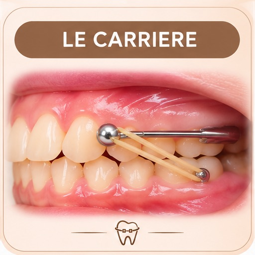

Carrière
Appareil collé + élastiques

À quoi ça sert ?
Reculer les dents du fond du haut pour que les dents s'emboîtent bien.
Quand le porter ?
Élastiques + gouttière : 22 h sur 24.
À retenir
- Portez élastiques et gouttière jour et nuit, sauf pour manger et se brosser les dents.
- Brossez 3 minutes après chaque repas, au-dessus et en dessous des attaches.
- Nettoyez la gouttière à chaque brossage : brosse et eau tiède savonneuse.
À éviter
- Chewing-gum, caramel, bonbons durs ou collants
- Croûtons et sandwichs baguette
- Croquer dans les aliments durs : coupez en morceaux
- Mordiller les stylos ou se ronger les ongles
Entretien
Si une bague se décolle, rapportez-la au prochain rendez-vous.
La règle d'or
Jamais d'élastiques sans la gouttière.
Gouttière perdue : 80 €